2026-06-09
Optimization problems with orthogonality constraints arise throughout machine learning, including dimensionality reduction, clustering, and representation learning. These problems require the variable to lie on the Stiefel manifold, the set of matrices with orthonormal columns. While orthogonality improves interpretability and numerical stability, it also makes the feasible set nonconvex, and things get harder still when the objective contains a non-smooth sparsity-inducing term.
\[ \newcommand{\xm}{\mathbf{X}} \newcommand{\am}{\mathbf{A}} \newcommand{\bm}{\mathbf{B}} \newcommand{\lm}{\mathbf{L}} \newcommand{\hm}{\mathbf{H}} \newcommand{\mm}{\mathbf{M}} \newcommand{\gm}{\mathbf{G}} \newcommand{\qm}{\mathbf{Q}} \newcommand{\pm}{\mathbf{P}} \newcommand{\um}{\mathbf{U}} \newcommand{\vm}{\mathbf{V}} \newcommand{\ym}{\mathbf{Y}} \newcommand{\zm}{\mathbf{Z}} \newcommand{\im}{\mathbf{I}} \newcommand{\fm}{\mathbf{F}} \newcommand{\vx}{\mathbf{x}} \newcommand{\vy}{\mathbf{y}} \newcommand{\vz}{\mathbf{z}} \newcommand{\vc}{\mathbf{c}} \newcommand{\vb}{\mathbf{b}} \newcommand{\vu}{\mathbf{u}} \newcommand{\vt}{\mathbf{t}} \newcommand{\vg}{\mathbf{g}} \newcommand{\vw}{\mathbf{w}} \newcommand{\trace}{\operatorname{tr}} \newcommand{\diag}{\operatorname{diag}} \newcommand{\sign}{\operatorname{sign}} \newcommand{\norm}[1]{\left\|#1\right\|} \newcommand{\inner}[2]{\left\langle #1,#2 \right\rangle} \newcommand{\pos}[1]{\left[#1\right]_+} \]
A prominent example is sparse principal component analysis (sparse PCA), which enhances interpretability by enforcing sparsity on the principal components while keeping them orthogonal:
\[ \min_{\xm}\; -\frac{1}{2}\trace(\xm^\top \am^\top\am \xm)+\lambda\norm{\xm}_1 \quad\text{s.t.}\quad \xm^\top\xm=\im, \]
where \(\am\) is the data matrix (each row a sample), \(\xm\) collects the principal components, and \(\lambda\) controls the sparsity level. Similarly, Sparse Spectral Clustering (SSC) injects sparsity into spectral embeddings to improve robustness and interpretability in graph-based learning:
\[ \min_{\xm}\; \frac{1}{2}\trace(\xm^\top \lm \xm)+\lambda\norm{\xm}_1 \quad\text{s.t.}\quad \xm^\top\xm=\im, \]
where \(\lm\) is a graph Laplacian. The same template covers many more models: unsupervised feature selection replaces the \(\ell_1\) norm with the row-sparsity-promoting \(\ell_{2,1}\) norm, and compressed modes in physics seeks spatially localized solutions of the independent-particle Schrödinger equation by taking the quadratic term to be a discretized Schrödinger operator \(\hm\). In every case the difficulty is the same: a non-smooth sparsity term sitting on top of a nonconvex orthogonality constraint.
Existing solvers largely fall into two camps. Riemannian methods (ManPG, ManPG-Ada, RADMM, ARADMM, OADMM) operate directly on the Stiefel manifold and preserve feasibility via retractions or projections, but they typically need repeated manifold operations or per-iteration line searches, which become expensive at scale. Relaxation or splitting methods decouple sparsity from orthogonality, but may sacrifice feasibility or introduce approximation error (e.g., Moreau-envelope smoothing of the regularizer). In this blog we discuss an algorithm which employs the former: an Alternating Direction Proximal Method of Multipliers (ADPMM) that handles the orthogonality constraint without relaxation, and whose per-iteration work reduces to one Stiefel projection plus one element-wise soft-thresholding.
Recall the classical Alternating Direction Method of Multipliers (ADMM). For a separable problem
\[ \min_{\vx,\vz}\; H(\vx,\vz)=h_1(\vx)+h_2(\vz) \quad\text{s.t.}\quad \am\vx+\bm\vz=\vc, \]
ADMM works on the augmented Lagrangian with dual variable \(\vy\) and penalty \(\rho>0\):
\[ L_\rho(\vx,\vz,\vy)=h_1(\vx)+h_2(\vz)+\vy^\top(\am\vx+\bm\vz-\vc)+\frac{\rho}{2}\norm{\am\vx+\bm\vz-\vc}^2, \]
alternating a minimization over \(\vx\), a minimization over \(\vz\), and a dual ascent step on \(\vy\). ADMM is simple and effective, but its performance can deteriorate when the subproblems are ill-conditioned or lack strong convexity; as we will see, the plain \(\vx\)-subproblem for sparse PCA is not something we can solve in closed form.
ADPMM fixes this by adding a quadratic proximal term to each primal update. For two positive semidefinite matrices \(\gm\) and \(\qm\), with \(\norm{\vx}_\gm^2=\vx^\top\gm\vx\):
Algorithm 1 (ADPMM).
Input: initial \(\vx,\vy,\vz\); penalty \(\rho\); proximal matrices \(\gm,\qm\).
For \(k=0,1,2,\ldots\):
\[\vx^{k+1}\in\arg\min_\vx\Big\{h_1(\vx)+\frac{\rho}{2}\norm{\am\vx+\bm\vz^k-\vc+\tfrac{1}{\rho}\vy^k}^2+\frac{1}{2}\norm{\vx-\vx^k}_\gm^2\Big\}\]
\[\vz^{k+1}\in\arg\min_\vz\Big\{h_2(\vz)+\frac{\rho}{2}\norm{\am\vx^{k+1}+\bm\vz-\vc+\tfrac{1}{\rho}\vy^k}^2+\frac{1}{2}\norm{\vz-\vz^k}_\qm^2\Big\}\]
\[\vy^{k+1}=\vy^k+\rho(\am\vx^{k+1}+\bm\vz^{k+1}-\vc)\]
When \(\gm=\qm=\mathbf{0}\), ADPMM degenerates to vanilla ADMM. The proximal terms play two roles: they stabilize the updates by penalizing large deviations from the previous iterate, and they can be chosen to cancel inconvenient quadratic terms in the objective, turning an otherwise hard subproblem into a closed-form one.
To put sparse PCA into the ADPMM template, introduce an auxiliary variable \(\zm\) that carries the sparsity term, leaving the orthogonality constraint on \(\xm\):
\[ \begin{aligned} \min_{\xm,\zm}\quad & -\frac{1}{2}\trace(\xm^\top\am^\top\am\xm)+\lambda\norm{\zm}_1\\ \text{s.t.}\quad & \xm^\top\xm=\im,\qquad \xm=\zm. \end{aligned} \]
Now design the proximal matrices. In the \(\xm\)-update, the objective contributes the concave quadratic \(-\frac{1}{2}\trace(\xm^\top\am^\top\am\xm)\). Choosing
\[ \gm=\am^\top\am \]
exactly cancels this quadratic: the proximal term \(\frac{1}{2}\norm{\xm-\xm^k}_\gm^2\) expands to \(\frac{1}{2}\trace(\xm^\top\am^\top\am\xm)\) plus terms linear in \(\xm\). What remains of the \(\xm\)-subproblem is a linear function of \(\xm\) plus \(\frac{\rho}{2}\norm{\xm-\zm^k+\tfrac{1}{\rho}\ym^k}_F^2\), restricted to the Stiefel manifold; this is the Orthogonal Procrustes problem, solved in closed form by the SVD:
\[ \xm^{k+1}=\um\vm^\top, \qquad \um\Sigma\vm^\top=\operatorname{svd}\big(\rho\zm^k-\ym^k+\gm\xm^k\big). \]
Since the \(\zm\)-update has no quadratic term, we simply take \(\qm=\mathbf{0}\), and the update reduces to element-wise soft-thresholding:
\[ \zm^{k+1}=\mathcal{S}_{\lambda/\rho}\Big(\xm^{k+1}+\tfrac{1}{\rho}\ym^k\Big), \qquad \mathcal{S}_{\tau}(\xm)=\sign(\xm)\odot\max(|\xm|-\tau,0). \]
Algorithm 2 (ADPMM for Sparse PCA).
Input: initial \(\xm,\ym,\zm\); penalty \(\rho\); data matrix \(\am\). Set \(\gm=\am^\top\am\).
For \(k=0,1,2,\ldots\):
Compute \(\operatorname{svd}(\rho\zm^k-\ym^k+\gm\xm^k)=\um\Sigma\vm^\top\).
\[\xm^{k+1}=\um\vm^\top \quad (\text{or via the Newton–Schulz iteration of Algorithm 3})\]
\[\zm^{k+1}=\mathcal{S}_{\lambda/\rho}\big(\xm^{k+1}+\tfrac{1}{\rho}\ym^k\big)\]
\[\ym^{k+1}=\ym^k+\rho(\xm^{k+1}-\zm^{k+1})\]
The Sparse Spectral Clustering case is identical except that the quadratic is \(+\frac{1}{2}\trace(\xm^\top\lm\xm)\), a convex term we cancel with
\[ \gm=\lambda_{\max}(\lm)\,\im-\lm, \]
where the shift by \(\lambda_{\max}(\lm)\) ensures \(\gm\succeq 0\) so the proximal term is a valid Bregman-like penalty. Every other line of the algorithm is unchanged. Thus, one framework, two problems; with the obvious substitutions, the unsupervised feature selection and compressed-modes models as well (for the \(\ell_{2,1}\) norm, soft-thresholding is replaced by its row-wise group analogue).
Each iteration therefore costs one matrix multiplication, one orthogonalization, and one entrywise shrinkage. No retractions, no line searches, no smoothing of the regularizer.
When \(h_1\) and \(h_2\) are proper, closed and convex and the proximal matrices make the subproblems strongly convex (our Hypothesis 1), ADPMM enjoys an ergodic \(\mathcal{O}(1/n)\) rate in both objective gap and feasibility violation.
Theorem 1. Let \(\{(\vx^k,\vz^k)\}\) be generated by Algorithm 2 (or its SSC variant), let \((\vx^*,\vz^*)\) be an optimal primal solution and \(\vy^*\) an optimal dual solution. Then, under Hypothesis 1, for any \(\gamma>2\norm{\vy^*}\) and \(n\ge 0\):
\[ H(\vx^{(n)},\vz^{(n)})-H(\vx^*,\vz^*) \le \frac{\norm{\vx^*-\vx^0}_\gm^2+\norm{\vz^*-\vz^0}_{\rho\im}^2+\frac{1}{\rho}(\gamma+\norm{\vy^0})^2}{2(n+1)}, \]
\[ \norm{\vx^{(n)}-\vz^{(n)}} \le \frac{\norm{\vx^*-\vx^0}_\gm^2+\norm{\vz^*-\vz^0}_{\rho\im}^2+\frac{1}{\rho}(\gamma+\norm{\vy^0})^2}{\gamma(n+1)}, \]
where \(\vx^{(n)}=\frac{1}{n+1}\sum_{k=0}^n\vx^k\) and \(\vz^{(n)}=\frac{1}{n+1}\sum_{k=0}^n\vz^k\) are the ergodic averages.
The proof leans on the following classical “certificate” result [1], which converts an approximate saddle-point bound into separate bounds on suboptimality and infeasibility.
Theorem 2. Let \(f_{\mathrm{opt}}\) be the optimal value of a convex problem \(\min_\vx\{f(\vx):g_i(\vx)\le 0,\;\am\vx+\vb=0\}\) for which strong duality holds with optimal dual solution \((\vy^*,\vz^*)\). If for some \(\delta>\norm{\vy^*}\), \(\rho_1\ge 2\norm{\vy^*}_2\), \(\rho_2\ge 2\norm{\vz^*}_2\) a point \(\tilde\vx\) satisfies
\[ f(\tilde\vx)-f_{\mathrm{opt}}+\rho_1\norm{\pos{\vg(\tilde\vx)}}_2+\rho_2\norm{\am\tilde\vx+\vb}_2\le\delta, \]
then
\[ f(\tilde\vx)-f_{\mathrm{opt}}\le\delta, \qquad \norm{\pos{\vg(\tilde\vx)}}_2\le\frac{2}{\rho_1}\delta, \qquad \norm{\am\tilde\vx+\vb}_2\le\frac{2}{\rho_2}\delta. \]
Proof. The first bound is immediate from the non-negativity of the last two terms on the left-hand side. For the others, define the perturbation function
\[ v(\vu,\vt)=\min_{\vx}\{f(\vx):\vg(\vx)\le\vu,\;\am\vx+\vb=\vt\}. \]
Optimality of the dual pair gives \((-\vy^*,-\vz^*)\in\partial v(0,0)\), hence
\[ v(\vu,\vt)-v(0,0)\ge\inner{-\vy^*}{\vu}+\inner{-\vz^*}{\vt}. \]
Define \(\tilde\vu=\pos{\vg(\tilde\vx)}\) and \(\tilde\vt=\am\tilde\vx+\vb\). Then
\[ \begin{aligned} (\rho_1-\norm{\vy^*}_2)\norm{\tilde\vu}_2+(\rho_2-\norm{\vz^*}_2)\norm{\tilde\vt}_2 &\le \inner{-\vy^*}{\tilde\vu}+\inner{-\vz^*}{\tilde\vt}+\rho_1\norm{\tilde\vu}_2+\rho_2\norm{\tilde\vt}_2\\ &\le v(\tilde\vu,\tilde\vt)-v(0,0)+\rho_1\norm{\tilde\vu}_2+\rho_2\norm{\tilde\vt}_2\\ &\le f(\tilde\vx)-f_{\mathrm{opt}}+\rho_1\norm{\tilde\vu}_2+\rho_2\norm{\tilde\vt}_2\le\delta. \end{aligned} \]
Both summands on the left are non-negative, so each is at most \(\delta\), and since \(\rho_1-\norm{\vy^*}_2\ge\rho_1/2\) and \(\rho_2-\norm{\vz^*}_2\ge\rho_2/2\) we conclude \(\norm{\tilde\vu}_2\le\frac{2}{\rho_1}\delta\) and \(\norm{\tilde\vt}_2\le\frac{2}{\rho_2}\delta\).
With Theorem 2 in hand, the proof of Theorem 1 proceeds in four steps. (i) Fermat’s optimality conditions for the two subproblems yield subgradient inequalities at \(\vx^{k+1}\) and \(\vz^{k+1}\), the first carrying the extra proximal term \(\gm(\vx^{k+1}-\vx^k)\). (ii) Adding them and applying, to each inner product, the three-point identity
\[ (\mathbf{a}-\mathbf{b})^\top\mathbf{P}(\mathbf{c}-\mathbf{d}) =\frac{1}{2}\big(\norm{\mathbf{a}-\mathbf{d}}_{\mathbf{P}}^2-\norm{\mathbf{a}-\mathbf{c}}_{\mathbf{P}}^2+\norm{\mathbf{b}-\mathbf{c}}_{\mathbf{P}}^2-\norm{\mathbf{b}-\mathbf{d}}_{\mathbf{P}}^2\big) \]
for \(\mathbf{P}\in\{\gm,\rho\im,\frac{1}{\rho}\im\}\) produces a single inequality of the form
\[ H(\vx,\vz)-H(\vx^{k+1},\vz^{k+1})+\inner{\vw-\tilde\vw^k}{\fm\vw} \ge \frac{1}{2}\norm{\vw-\vw^{k+1}}_{\hm}^2-\frac{1}{2}\norm{\vw-\vw^k}_{\hm}^2, \]
where \(\vw=(\vx,\vz,\vy)\), \(\hm=\diag(\gm,\rho\im,\frac{1}{\rho}\im)\), and \(\fm\) is a skew-symmetric matrix. Skew-symmetry is what lets us swap \(\fm\tilde\vw^k\) for \(\fm\vw\) at no cost. (iii) Telescoping over \(k=0,\ldots,n\) and invoking convexity of \(H\) at the ergodic averages gives a bound that shrinks like \(\frac{1}{2(n+1)}\norm{\vw-\vw^0}_{\hm}^2\). (iv) Plugging in \((\vx^*,\vz^*)\), maximizing the dual variable over a ball of radius \(\gamma>2\norm{\vy^*}\), and applying Theorem 2 splits the resulting bound into the two inequalities of Theorem 1.
A remark is in order: the original problems are nonconvex because of the Stiefel constraint, so Theorem 1 should be read as the guarantee inherited by the splitting under Hypothesis 1; recent global-convergence results for nonconvex ADMM provide partial justification for the full nonconvex setting, and empirically the iterates converge stably in all our experiments.
The SVD in the \(\xm\)-update is exact but costs \(\mathcal{O}(n^3)\) for an \(n\times n\) input, which dominates the per-iteration time at scale. Any orthogonalization that maps \(\pm\mapsto\um\vm^\top\) will do, and cheaper iterative candidates abound: QR, Modified Gram–Schmidt, polar decomposition, and the Newton–Schulz iteration, which uses only matrix multiplications and is therefore extremely fast on modern hardware.
Algorithm 3 (Newton–Schulz orthogonalization).
Input: \(\pm=\rho\zm^k-\ym^k+\gm\xm^k\in\mathbb{R}^{n\times p}\); small \(\varepsilon\); coefficients \(a=1.9\), \(b=-1.3\), \(c=0.4\).
If \(n>p\), transpose: \(\pm\leftarrow\pm^\top\) (iterate on the wider orientation).
Normalize: \(\qm\leftarrow\pm/(\norm{\pm}_F+\varepsilon)\).
For \(t=1,\ldots,5\):
\[\am\leftarrow\qm\qm^\top,\qquad \bm\leftarrow b\am+c\am^2,\qquad \qm\leftarrow a\qm+\bm\qm.\]
Transpose back if needed. Output: \(\xm^{k+1}=\qm\).
Why does this work, and where do \((a,b,c)\) come from? Each inner step applies the odd quintic
\[ \qm_{t+1}=a\qm_t+b\qm_t(\qm_t^\top\qm_t)+c\qm_t(\qm_t^\top\qm_t)^2, \]
which, writing \(\qm_t=\um\Sigma_t\vm^\top\), acts only on the singular values:
\[ \Sigma\mapsto p(\Sigma),\qquad p(\sigma)=a\sigma+b\sigma^3+c\sigma^5, \]
while \(\um,\vm\) stay fixed. Driving \(\qm\to\um\vm^\top\) is exactly driving every singular value to \(1\), i.e., making \(\sigma=1\) an attracting fixed point of \(p\). We therefore impose
\[ p(1)=a+b+c=1, \qquad p'(1)=a+3b+5c=0, \]
where the first condition makes \(\sigma=1\) a fixed point and the second makes it superattracting. Two linear conditions leave one degree of freedom; solving for \(a,b\) in terms of \(c\):
\[ a=\tfrac{3}{2}+c,\qquad b=-\tfrac{1}{2}-2c. \]
Since \(p'(1)=0\), a Taylor expansion gives \(p(1+\delta)=1+\tfrac{1}{2}p''(1)\delta^2+\mathcal{O}(\delta^3)\), so singular values near \(1\) converge quadratically. The Frobenius normalization in Step 2 places all singular values in \([0,1]\), where \(\sigma=0\) is repelling because \(p'(0)=a>1\); the iteration amplifies small singular values and locks large ones onto \(1\). We use \(c=0.4\), giving \((a,b,c)=(1.9,-1.3,0.4)\); the remaining freedom in \(c\) trades off how aggressively small singular values are amplified against overshoot near \(\sigma=1\).
It is worth contrasting this with the widely used Muon coefficients from the deep-learning optimizer literature: those are tuned only to push singular values into a band around \(1\) within a fixed iteration budget and deliberately violate \(p'(1)=0\). Our solver must satisfy \(\xm^\top\xm=\im\) exactly, so we instead enforce an exact superattracting fixed point at \(\sigma=1\). With this choice, \(\norm{\xm^\top\xm-\im}_F\) reached machine precision within the five inner iterations in all experiments. NS-ADPMM matches the SVD variant’s constraint accuracy at a fraction of the cost.
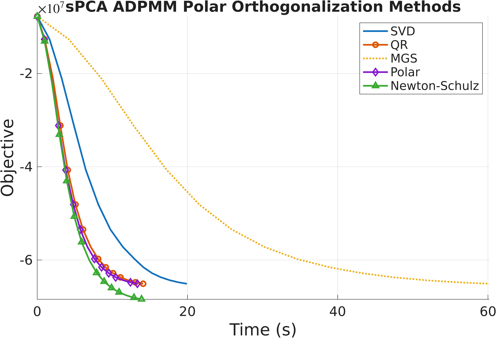
We evaluate two instances of the framework: SVD-ADPMM (exact Stiefel projection) and NS-ADPMM (Newton–Schulz projection) against five state-of-the-art manifold baselines: ManPG, ManPG-Ada, RADMM, ARADMM, and OADMM. Datasets span text (News20, RCV1), images (MNIST, USPS), citation/collaboration/social graphs (Cora, ca-GrQc, Facebook), and synthetic problems with planted structure. All methods share the same fixed random initialization; we set \(\rho=\lambda_{\max}(\am^\top\am)\) for SPCA and \(\rho=\tfrac{1}{2}\lambda_{\max}(\lm)\) for SSC. Both formulations are minimizations, so lower curves are better.
On News20, OADMM matches our methods per iteration, but it pays for each iteration with a backtracking line search on the manifold, requiring repeated retractions and augmented-Lagrangian evaluations. The wall-clock plots tell the real story: NS-ADPMM and SVD-ADPMM converge significantly faster in time than every baseline.
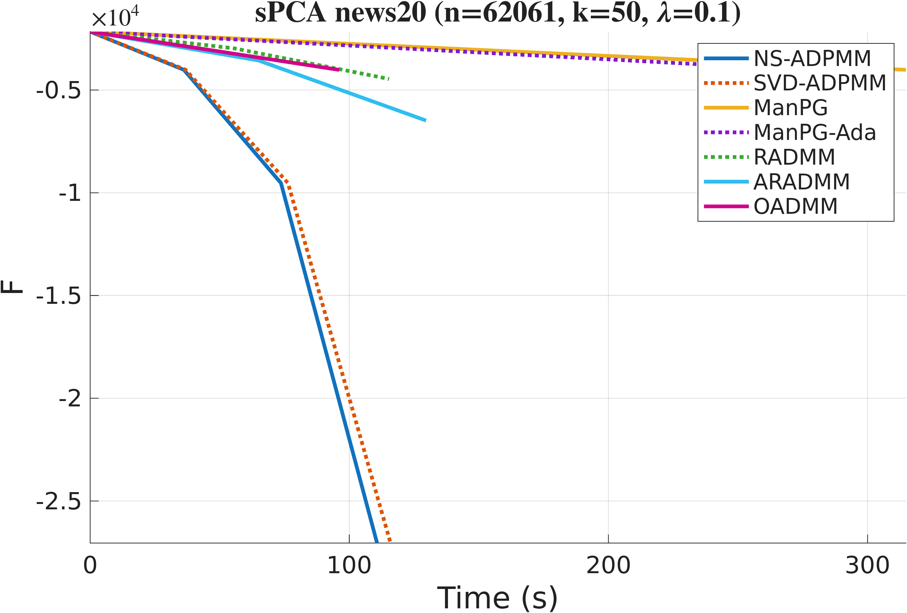
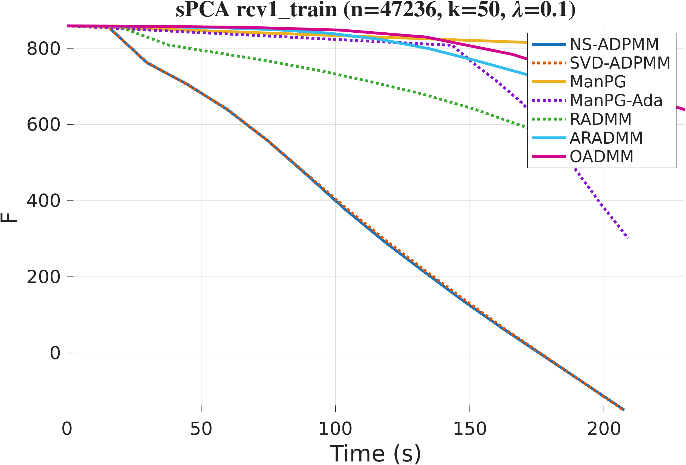
For Sparse Spectral Clustering we build Gaussian similarity graphs with bandwidth set to the median squared pairwise distance. On both MNIST and USPS, ADPMM with either projection variant converges to a lower objective in fewer iterations and less time than the baselines, with NS-ADPMM the most efficient.
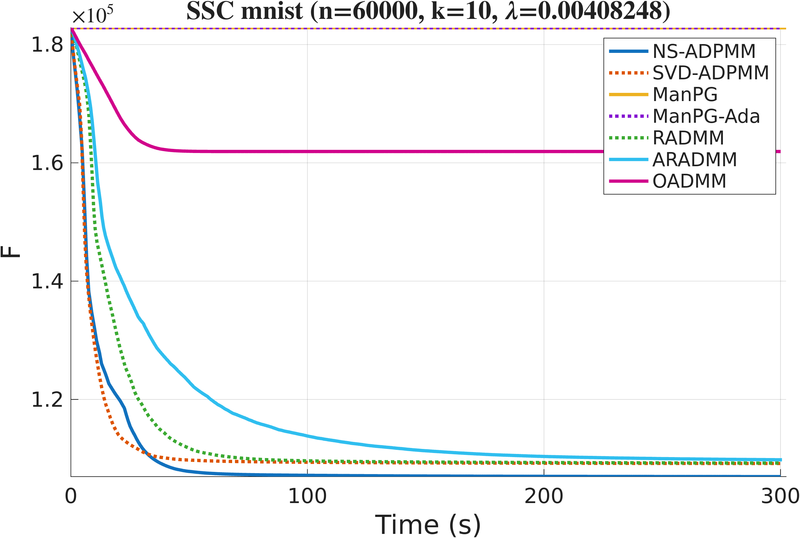
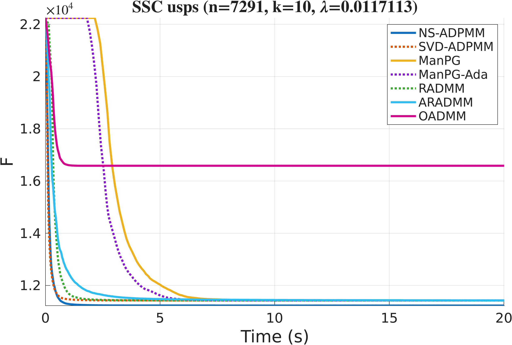
The same advantage carries over to real network graphs (ca-GrQc, Cora, Facebook), where the proposed methods reach competitive objective values while enforcing the orthogonality constraint exactly, and do so faster than the manifold baselines.
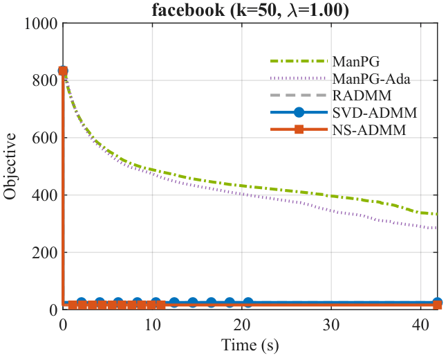
Finally, sweeping the problem size, sparsity weight \(\lambda\), and penalty \(\rho\) on synthetic instances shows the methods maintain stable convergence and their efficiency advantage across all settings, indicating that ADPMM scales to large, high-dimensional problems.
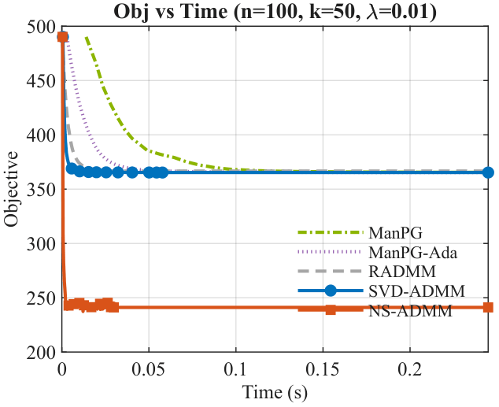
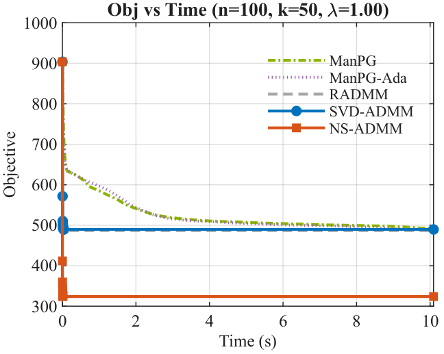
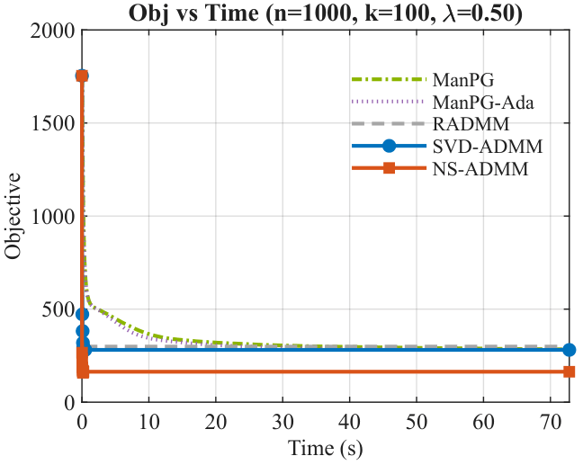
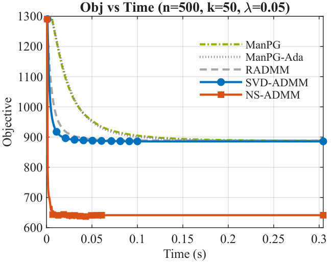
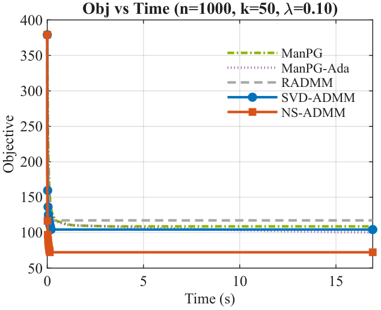
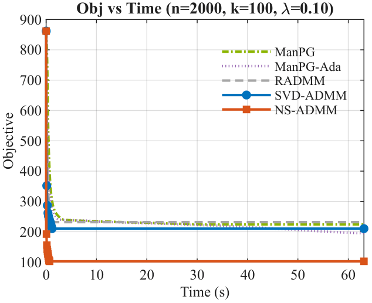
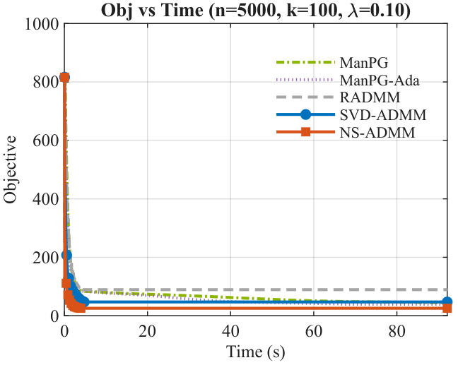
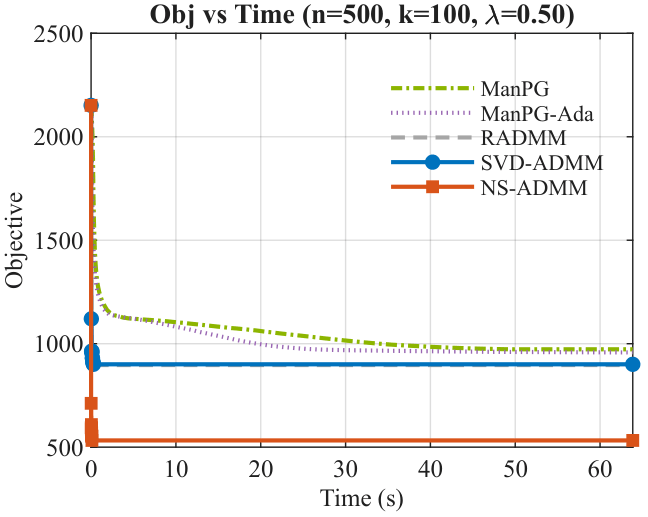
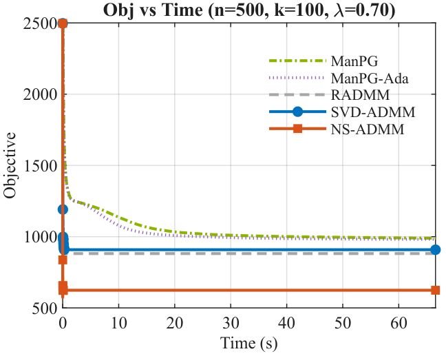
[1] Amir Beck. “First-order methods in optimization.” SIAM, 2017.
[2] Stephen Boyd et al. “Distributed optimization and statistical learning via the alternating direction method of multipliers.” Foundations and Trends in Machine Learning, 2011.
[3] Shixiang Chen et al. “Proximal gradient method for nonsmooth optimization over the Stiefel manifold.” SIAM Journal on Optimization, 2020.
[4] Nicholas J. Higham. “Functions of matrices: theory and computation.” SIAM, 2008.
[5] Keller Jordan et al. “Muon: An optimizer for hidden layers in neural networks.” 2024.